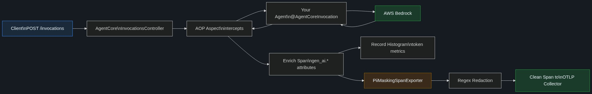
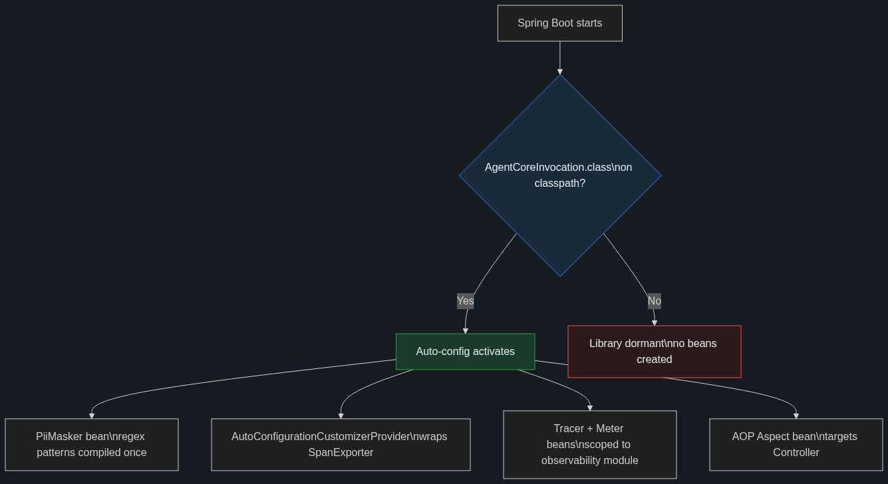
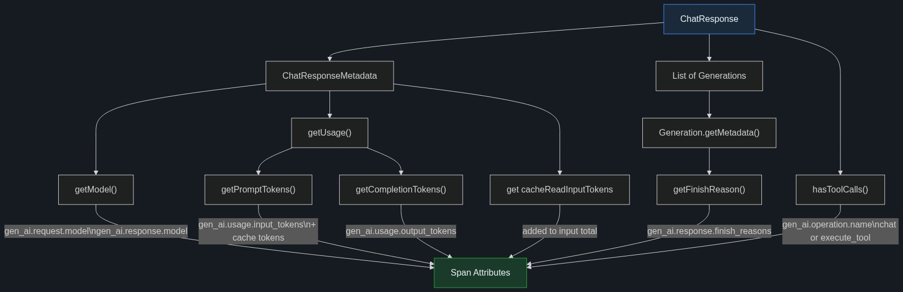
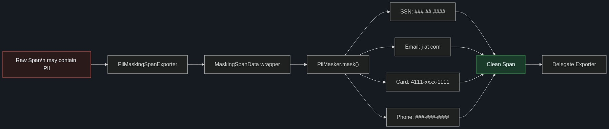
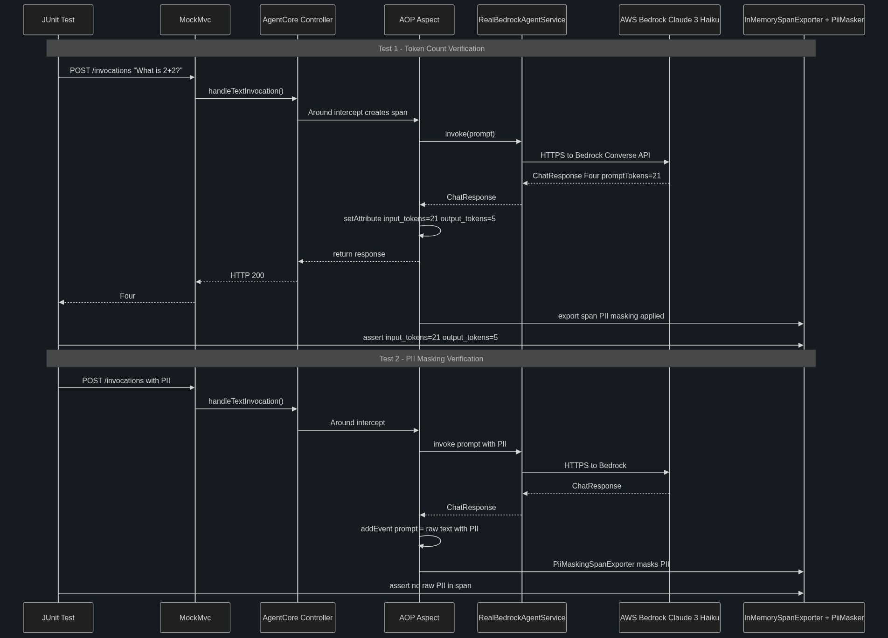

Documentation for spring-ai-agentcore-observability
• Tested with real AWS Bedrock • April 2026
Community proposal: spring-ai-community/community#26
When you build an AI agent with Spring AI Bedrock AgentCore, your app exposes POST /invocations. Every prompt goes through AgentCore's controller to your @AgentCoreInvocation method, which calls AWS Bedrock and returns a ChatResponse.
Out of the box, you only get generic HTTP spans like "POST /invocations 800ms." Nothing about the AI model, tokens consumed, or whether the prompt contained personal information.
This library adds three things automatically:
gen_ai.client.token.usage histogram so you can track consumption in Grafana, Datadog, etc.Zero code changes required. Add the Maven dependency and Spring Boot auto-configuration handles the rest.

How it works: A client sends a prompt to /invocations. AgentCore's controller receives it. The AOP aspect wraps the call, creating an OpenTelemetry span. Your agent service calls Bedrock and gets a ChatResponse with the model's reply and token counts. The aspect extracts GenAI attributes (provider, model, tokens, finish reasons) and sets them on the span. It records token counts into a histogram metric. When the span is exported, the PiiMaskingSpanExporter applies regex redaction for emails, SSNs, credit cards, and phones, then forwards the clean span to your collector.
This library is designed as a standard Spring Boot starter. It plugs into three Spring ecosystems: Spring Boot auto-configuration, Spring AOP, and the OpenTelemetry Spring Boot starter. Here is how each piece fits together.
The entry point is AgentCoreObservabilityAutoConfiguration, registered via the standard META-INF/spring/org.springframework.boot.autoconfigure.AutoConfiguration.imports file. Spring Boot discovers it at startup. The class is annotated with @ConditionalOnClass(AgentCoreInvocation.class), so it only activates when the AgentCore starter (spring-ai-bedrock-agentcore-starter) is on the classpath. If you remove AgentCore, this library does nothing.

Conditional activation: When AgentCore is present, four beans are created: (1) PiiMasker compiles regex patterns once at startup, (2) an AutoConfigurationCustomizerProvider wraps whatever span exporter is configured (OTLP, logging, etc.) with the PII-masking wrapper, (3) a Tracer and Meter scoped to this library, and (4) the AOP aspect. When AgentCore is absent, zero beans are registered.
The AOP aspect uses an @Around pointcut that targets AgentCoreInvocationsController.handleJsonInvocation() and handleTextInvocation(). This is a deliberate design choice. AgentCore's AgentCoreMethodScanner uses reflection to find @AgentCoreInvocation methods on beans. If Spring AOP creates a CGLIB proxy around your agent service, the proxy class may not retain the annotation on overridden methods, which would prevent AgentCore from registering your invocation handler. By targeting the controller instead, your agent bean stays a plain @Service with no proxy interference.
The library reads telemetry data from Spring AI's response objects. It does not replace Spring AI's built-in observation hooks - it complements them by adding AgentCore-specific GenAI attributes at the HTTP controller layer.
| Spring AI Type | What the Library Reads | Maps To |
|---|---|---|
ChatResponse | hasToolCalls() | gen_ai.operation.name (chat vs execute_tool) |
ChatResponseMetadata | getModel() | gen_ai.request.model, gen_ai.response.model |
Usage | getPromptTokens(), getCompletionTokens() | gen_ai.usage.input_tokens, gen_ai.usage.output_tokens |
ChatResponseMetadata | get("cacheReadInputTokens") | Added to gen_ai.usage.input_tokens |
Generation | getMetadata().getFinishReason() | gen_ai.response.finish_reasons |
AssistantMessage | getText() | gen_ai.completion span event (opt-in) |
The library uses the opentelemetry-spring-boot-starter which auto-configures the OTel SDK. The PII masking exporter is injected via AutoConfigurationCustomizerProvider - a standard OTel SDK extension point that lets you customize the span exporter pipeline. The customizer wraps whatever exporter is configured (OTLP, logging, etc.) with PiiMaskingSpanExporter, so masking happens regardless of your export destination.
| Package | Classes | Responsibility |
|---|---|---|
autoconfigure | AgentCoreObservabilityAutoConfiguration | Spring Boot auto-config: conditional activation, bean registration |
telemetry | AgentCoreInvocationObservabilityAspectGenAiTelemetrySupport | AOP aspect for span enrichment + GenAI semantic convention constants |
masking | PiiMaskerMaskingSpanDataPiiMaskingSpanExporter | PII redaction: regex engine, span data decorator, exporter wrapper |

Mapping: The aspect reads the ChatResponse returned by Bedrock. Model name goes to gen_ai.request.model and gen_ai.response.model. Prompt tokens + cache read tokens become gen_ai.usage.input_tokens. Completion tokens become gen_ai.usage.output_tokens. Finish reasons are collected from each Generation. If the response has tool calls, the operation is execute_tool; otherwise chat. Provider and system are always aws.bedrock.

Pipeline: Every span passes through PiiMaskingSpanExporter before export. It wraps each SpanData in a MaskingSpanData decorator that lazily masks all string span attributes and selectively masks event attributes (prompt, completion, password keys, gen_ai.content.* events). Four regex patterns run in sequence: SSN, credit card (13-19 digits, keeps first/last 4), email, and US phone. Results are cached per span.
| PII Type | Raw Input | After Masking |
|---|---|---|
jane@example.com | j***@***.com | |
| SSN | 123-45-6789 | ###-##-#### |
| Credit Card | 4111111111111111 | 4111-****-****-1111 |
| Phone | 212-555-0199 | ###-###-#### |
The original 35 tests in this project all use synthetic (mocked) ChatResponse objects. They prove the logic is correct but never call a real AI model. We added 2 integration tests that make actual HTTPS calls to AWS Bedrock to prove the library works end-to-end with a live model.
| AWS Region | us-east-1 |
| Model | anthropic.claude-3-haiku-20240307-v1:0 |
| Java | OpenJDK 17.0.17 (Microsoft) |
| Spring Boot | 3.5.9 |
| Spring AI | 1.0.0 |
| Test dependency | spring-ai-starter-model-bedrock-converse (provides real ChatModel) |
We created a RealBedrockAgentService that injects Spring AI's real ChatModel (backed by Bedrock Converse API) and delegates to it:
@Service
public class RealBedrockAgentService {
private final ChatModel chatModel;
public RealBedrockAgentService(ChatModel chatModel) {
this.chatModel = chatModel;
}
@AgentCoreInvocation
public ChatResponse invoke(String prompt) {
return chatModel.call(new Prompt(prompt));
}
}The test boots a full @SpringBootTest context, uses MockMvc to POST to /invocations, and captures exported spans via an InMemorySpanExporter wrapped by PiiMaskingSpanExporter. If AWS credentials are missing, the tests auto-skip.
This test sends a simple math question to Bedrock and verifies that the observability library captures the real token counts from the model's response.
POST /invocations
Content-Type: text/plain
What is 2 plus 2? Answer in one word.HTTP 200 OK
{
"result": {
"output": {
"text": "Four.",
"messageType": "ASSISTANT"
},
"metadata": {
"finishReason": "end_turn"
}
},
"metadata": {
"usage": {
"promptTokens": 21,
"completionTokens": 5,
"totalTokens": 26
}
}
}Span name: "chat"
Span kind: INTERNAL
Status: OK
Attributes:
gen_ai.provider.name = "aws.bedrock"
gen_ai.operation.name = "chat"
gen_ai.system = "aws.bedrock"
gen_ai.usage.input_tokens = 21 ← real count from Bedrock
gen_ai.usage.output_tokens = 5 ← real count from Bedrock
Events:
gen_ai.content.prompt:
gen_ai.prompt = "What is 2 plus 2? Answer in one word."
gen_ai.content.completion:
gen_ai.completion = "Four."PASS The library correctly extracted real token counts (21 input, 5 output) from the Bedrock response and set them as gen_ai.usage.* span attributes. The provider is aws.bedrock, the operation is chat, and the prompt/completion text was captured as span events (because OTEL_GENAI_CAPTURE_CONTENT=true).
This test sends a prompt containing personal information (email and SSN) and verifies that the PII is redacted in the exported span before it would reach any telemetry backend.
POST /invocations
Content-Type: text/plain
My email is jane@example.com and SSN is 123-45-6789. Just say OK.HTTP 200 OK
(Bedrock responded successfully -
the model's reply text is not the
focus of this test)Event: gen_ai.content.prompt
gen_ai.prompt = "My email is j***@***.com and SSN is ###-##-####. Just say OK."| PII | Raw (what user typed) | In exported span | Status |
|---|---|---|---|
jane@example.com | j***@***.com | MASKED | |
| SSN | 123-45-6789 | ###-##-#### | MASKED |
PASS The raw PII values (jane@example.com, 123-45-6789) do not appear anywhere in the exported span. The PiiMaskingSpanExporter replaced them with j***@***.com and ###-##-#### before the span was handed to the exporter. This redaction happens inside the JVM process - the sensitive data never travels over the network.

Sequence: Both tests follow the same path: JUnit sends an HTTP POST via MockMvc, which hits the AgentCore controller. The AOP aspect intercepts, creates a span, and lets the call proceed to the real agent service. The agent service makes a real HTTPS call to Bedrock in us-east-1. When the response returns, the aspect enriches the span with GenAI attributes and records metrics. The span is then exported through the PII masking wrapper. Test 1 asserts the token counts match what Bedrock returned. Test 2 asserts that PII in the prompt was redacted before the span reached the exporter.
$ mvn clean verify
[INFO] Tests run: 37, Failures: 0, Errors: 0, Skipped: 0
[INFO] All coverage checks have been met.
[INFO] BUILD SUCCESS (32.335 s)The test suite has 37 tests organized in three layers: 2 real AWS Bedrock integration tests, 2 synthetic Spring Boot integration tests, and 33 unit tests. Together they cover every production code path. JaCoCo enforces 100% line and branch coverage on all instrumented classes.
Real HTTPS calls to AWS Bedrock in us-east-1. Auto-skips without AWS credentials.
gen_ai.usage.input_tokens=21, output_tokens=5, provider=aws.bedrockjane@example.com and SSN 123-45-6789, asserts they are masked to j***@***.com and ###-##-#### in exported spanFull @SpringBootTest with synthetic ChatResponse. No AWS needed.
Unit tests for the AOP aspect. Every code path covered.
error.type="timeout""authentication_failure""authentication_failure""illegalstateexception"hasToolCalls()=true → operation "execute_tool"output_tokens=0input_tokens=0Tests the span data decorator that selectively masks attributes and events.
Tests the regex redaction engine.
j@example.com → *@***.comExporter delegation, sample app, constants.
| # | Feature | Status | How Tested |
|---|---|---|---|
| 1 | Spring Boot auto-configuration | ✓ | Both @SpringBootTest contexts boot without manual bean registration |
| 2 | AOP wraps AgentCore controller | ✓ | Real Bedrock POST /invocations produces GenAI span |
| 3 | gen_ai.provider.name = aws.bedrock | ✓ | Real Bedrock span attribute |
| 4 | gen_ai.operation.name chat/execute_tool | ✓ | Real: "chat". Unit test: "execute_tool" when hasToolCalls()=true |
| 5 | gen_ai.usage.input_tokens | ✓ | Real Bedrock: 21 tokens |
| 6 | gen_ai.usage.output_tokens | ✓ | Real Bedrock: 5 tokens |
| 7 | gen_ai.request.model | ✓ | Set from ChatResponseMetadata.getModel() |
| 8 | gen_ai.response.finish_reasons | ✓ | Collected from Generation metadata, comma-joined |
| 9 | Token histogram metric | ✓ | meter.histogramBuilder("gen_ai.client.token.usage"), unit {token} |
| 10 | OTEL_GENAI_CAPTURE_CONTENT gating | ✓ | Real test: prompt event present when true. Unit: absent when false |
| 11 | PII masking - email | ✓ | Real Bedrock: jane@example.com → j***@***.com |
| 12 | PII masking - SSN | ✓ | Real Bedrock: 123-45-6789 → ###-##-#### |
| 13 | PII masking - credit card | ✓ | Synthetic test: 4111111111111111 → 4111-****-****-1111 |
| 14 | PII masking - phone | ✓ | Unit test: 212-555-0199 → ###-###-#### |
| 15 | Bedrock cache token support | ✓ | Unit: cacheReadInputTokens=5 + promptTokens=10 = input_tokens=15 |
| 16 | Error: timeout classification | ✓ | TimeoutException → error.type="timeout" |
| 17 | Error: auth classification | ✓ | AuthenticationException → "authentication_failure" |
| 18 | Error: generic classification | ✓ | IllegalStateException → "illegalstateexception" |
| 19 | @ConditionalOnClass activation | ✓ | Auto-config only activates with AgentCore on classpath |
| 20 | Aspect targets controller not user bean | ✓ | Pointcut names AgentCoreInvocationsController explicitly |
| 21 | 6 production classes | ✓ | AutoConfig, Aspect, TelemetrySupport, PiiMasker, MaskingSpanData, Exporter |
| 22 | 100% JaCoCo coverage gate | ✓ | "All coverage checks have been met" - LINE and BRANCH at 1.00 |
| 23 | Java 17+, Spring Boot 3.5.x, Spring AI 1.0.0 | ✓ | pom.xml verified |
| 24 | OTel instrumentation BOM 2.14.0 | ✓ | pom.xml verified |
| 25 | Apache 2.0 license | ✓ | LICENSE file + headers in all source files |
This tutorial walks you through adding observability and PII masking to an existing AgentCore application in under 5 minutes.
spring-ai-bedrock-agentcore-starteraws configure, env vars, or IAM role)Add this library to your pom.xml. The Spring AI BOM and OTel BOM manage transitive versions.
<dependency>
<groupId>org.springaicommunity.agentcore</groupId>
<artifactId>spring-ai-agentcore-observability</artifactId>
<version>0.1.0-SNAPSHOT</version>
</dependency>That's it. No @EnableXxx annotation, no bean registration, no configuration class. Spring Boot auto-configuration handles everything.
Your agent service is a normal Spring @Service with an @AgentCoreInvocation method that returns a ChatResponse:
@Service
public class MyAgent {
private final ChatModel chatModel;
public MyAgent(ChatModel chatModel) {
this.chatModel = chatModel;
}
@AgentCoreInvocation
public ChatResponse invoke(String prompt) {
return chatModel.call(new Prompt(prompt));
}
}In application.properties:
spring.ai.bedrock.aws.region=us-east-1
spring.ai.bedrock.converse.chat.options.model=anthropic.claude-3-haiku-20240307-v1:0
spring.ai.bedrock.converse.chat.options.max-tokens=500By default, the library only captures token counts and metadata. To also capture the full prompt and completion text in span events, set:
# In application.properties or as an environment variable
OTEL_GENAI_CAPTURE_CONTENT=trueWhen enabled, the PiiMaskingSpanExporter will automatically redact emails, SSNs, credit cards, and phone numbers from the captured text before export.
To see spans in your console (for development):
otel.traces.exporter=loggingTo send spans to an OTLP collector (Jaeger, Grafana Tempo, etc.):
otel.traces.exporter=otlp
otel.exporter.otlp.endpoint=http://localhost:4318# Start the application
mvn spring-boot:run
# Send a test prompt
curl -X POST http://localhost:8080/invocations \
-H "Content-Type: text/plain" \
-d "What is the capital of France?"
# Check the health endpoint
curl http://localhost:8080/pingYou should see a 200 response with the model's answer. If you configured otel.traces.exporter=logging, check your console for a span with gen_ai.provider.name=aws.bedrock and real token counts.
Send a prompt with PII and check the exported span:
curl -X POST http://localhost:8080/invocations \
-H "Content-Type: text/plain" \
-d "My email is test@company.com and my SSN is 987-65-4321. Say hello."In the exported span event, you should see:
gen_ai.prompt = "My email is t***@***.com and my SSN is ###-##-####. Say hello."The raw PII never leaves your JVM process.
# Full suite (37 tests - real Bedrock tests auto-skip without AWS creds)
mvn clean verify
# Only real Bedrock tests
mvn test -Dtest="RealBedrockIntegrationTest"
# Only synthetic tests (no AWS needed)
mvn test -Dtest="AgentCoreObservabilityIntegrationTest"The gen_ai.* attribute names used by this library follow these specifications: